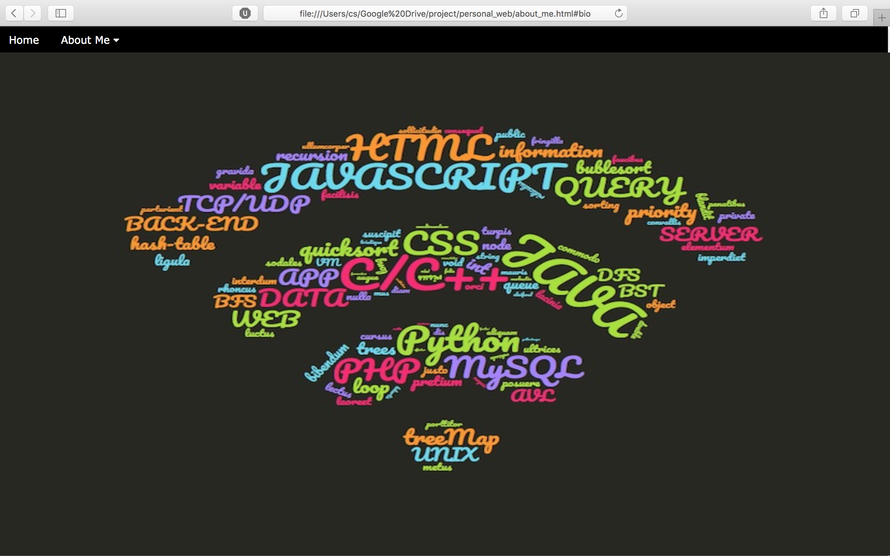
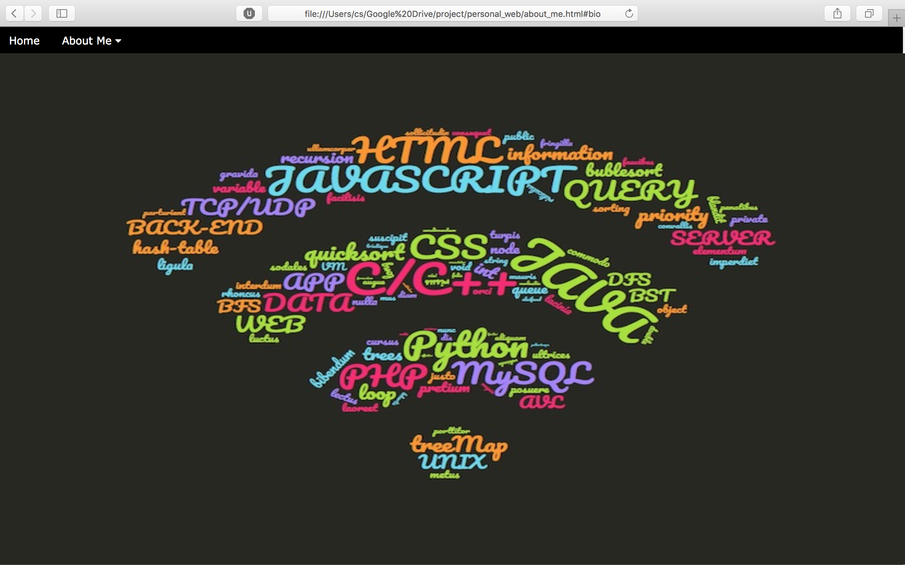

Biography
Quoc Nguyen, Software Developer
I'm a third Computer Science major at San Jose State. My career goal is to become a full-stack developer with emphasis on information security.
I’m a simple, ambitious person that love to spread the knowledges that could help other people succeed in whatever they do.

 
